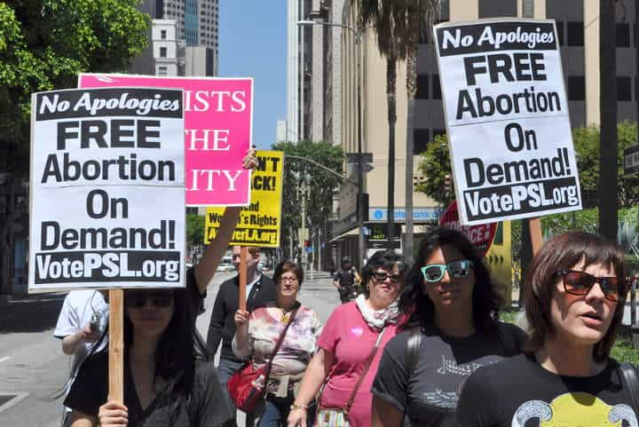

This account syndicates news from other media outlets.


Planned Parenthood NYC Action’s new fundraising campaign touting the “freedom to f**k” comes in the wake of President Donald Trump’s nomination of Judge Brett Kavanaugh to the Supreme Court.
“New Yorkers have more sex than the rest of America (Woo! We did it!),” touts Planned Parenthood NYCAction. “Planned Parenthood of New York City is here to make sure that everyone has access to the sexual and reproductive health care services they need.”
“F**k man spreaders … f**k anyone who can afford their rent, f**k whoever has a washer/dryer in their f**king apartments,” the video continues.
The clearly stated message at the conclusion of the video is “F**k New York and everyone in it. Protect our right to safely f**k whoever the f**k we want. Donate to Planned Parenthood.”
Though some constitutional experts say Roe v. Wade is not at stake with the nomination of Kavanaugh to the Supreme Court, the abortion industry has waged a fear-mongering campaign aimed at donations.
“Brett Kavanaugh has a dangerous track record of trying to block women from getting access to birth control and abortion care,” wrote Dawn Laguens, executive vice president of the Planned Parenthood Action Fund, in an email letter to supporters this week. “Just last year, he ruled to block an undocumented woman who recently entered the United States from obtaining an abortion. He also ruled in favor of bosses denying their employees birth control coverage based on their personal religious objections.”

“Now, President Trump wants Kavanaugh’s extreme views on the Supreme Court,” she continued. “Based on this record, we can safely assume that he will make good on Trump’s promise to only appoint justices who will overturn Roe v. Wade. We must stop Kavanaugh — this is a fight we can’t afford to lose.”
However, Leonard Leo, an outside adviser to Trump on Supreme Court nominations, has said the fate of Roe v. Wade remains uncertain and that the left is engaging in scare tactics that Trump’s nominee will overturn the controversial decision.

“We’ve been talking about this for 36 years, going all the way back to the nomination of Sandra O’Connor,” Leo said, according to ABC’s This Week. “And after that 36-year period, we only have a single individual on the court who has expressly said he would overturn Roe. So, I think it’s a bit of a scare tactic and ranks speculation more than anything else.”
Don’t Miss: How Abortion Creates A Society Of Entitled Women And Desperate Men